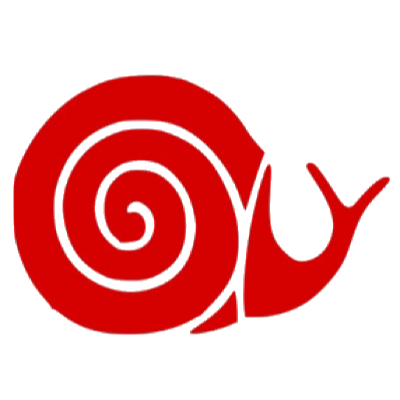

  <header>

  <div id="logo">
     
    <h1>SFYntership</h1>
  </div>

  <script src="https://ajax.googleapis.com/ajax/libs/jquery/3.5.1/jquery.min.js"></script>
    <script>
    $(document).ready(function(){
      $(window).bind('scroll', function() {
      var navHeight = $( window ).height() - 75;
        if ($(window).scrollTop() > navHeight) {
          $('nav').addClass('fixed');
        }
        else {
          $('nav').removeClass('fixed');
        }
     });
   });
  </script>
  
		<nav>
      <ul>
        <li><a href="basic.html">Home</a></li>     
        <li><a href="praktikum.html">Finde ein Praktikum</a>
         <ul>
           <li class="unterpunkt"><a href="praktikum.html#stellen">Stellen</a></li>
           <li><a href="praktikum.html#erfahrungsberichte">Erfahrungsberichte</a></li>
         </ul>
       </li>
        <li><a href="betriebe.html">Für Betriebe</a></li>
        <li><a href="sfy.html">Über SFYnthership</a>
          <ul>
            <li class="unterpunkt"><a href="sfy.html#überuns">Über uns</a></li>
            <li><a href="sfy.html#worumgehtes">Worum geht es?</a></li>
            <li><a href="sfy.html#mitmachen">Mitmachen</a></li>
          </ul>
        </li>
          <li><a href="partner.html"> Partner &amp; Projekte</a></li>
        </ul>
    </nav>
  </header>